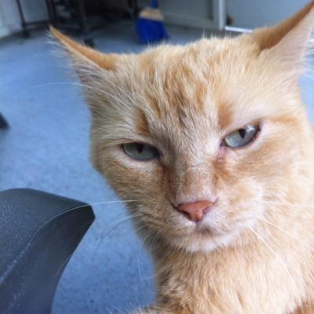
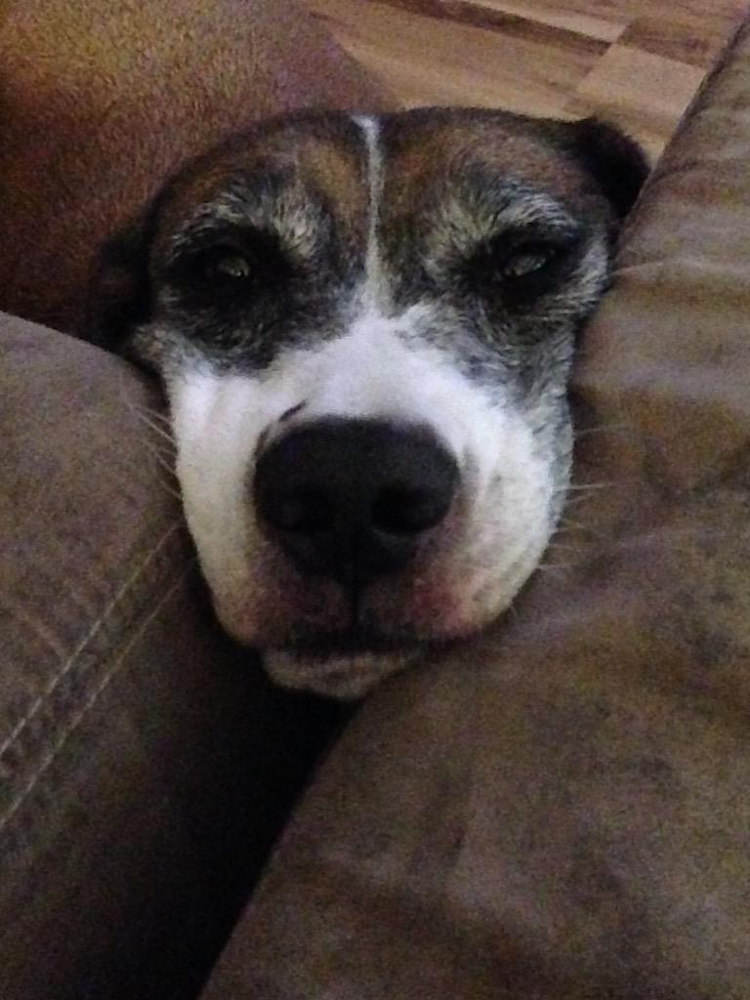
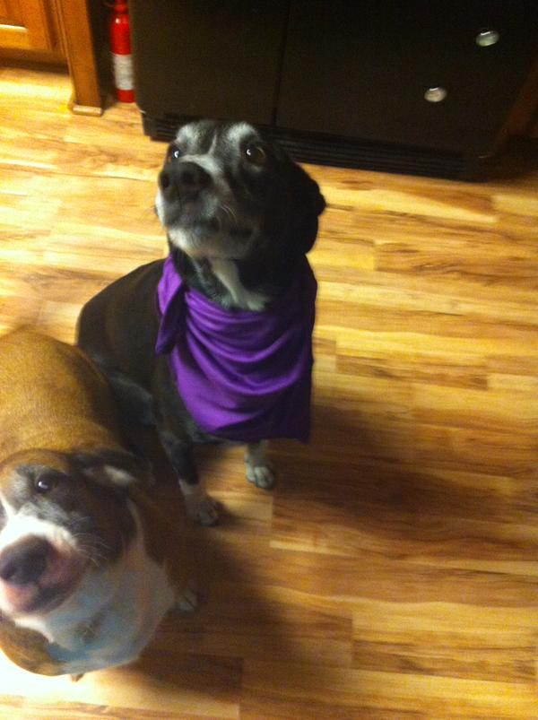

A list of our crazy pets with their Bio.
Crush
- Birth Date: July 5th, 2008
- Gender: Male
- Level of Crazy: High
- Favorite Passtimes(s): Soccer, running into walls, bad hide and seak, and racing all the pets and people around the house.
Crush is an energetic cat that loves to run around all day, even if walls are in the way. He has a twin brother named Mortimer who is the exact opposite of him.

Mortimer (Morty)
- Birth Date: July 5th, 2008
- Gender: Male
- Level of Crazy: Sporadic
- Favorite Passtime(s): Sleeping, some more sleeping, eating, and did I mention sleeping?
Mortimer, also known as Morty, is a very lazy cat. He often spends his time sleeping right where you want to sit or put something. He loves to eat everything including cat food, dog food, metal, wood, plastic, and anthing he can put into his mouth.

Snowball
- Birth Date: November 12, 2002
- Gender: Female
- Level of Crazy: Psycho
- Favorite Passtime(s): Demanding attention, meowing extremely loud, and massaging people.
Snowball is the oldest cat in the house. She is also the only female cat. She is a black siamese who is always wanting attention. She loves to sit in your lap and use her paws to massage your neck while staring at you....it's a little creepy.
Roscoe
- Birth Date: July 1st, 2009
- Gender: Male
- Level of Crazy: Minimum
- Favorite Passtime(s): Loves running around and feeling the wind blow threw his ears while sitting down outside.
Roscoe is a very relaxed dog. He could spend hours outside just sitting with the wind blowing into his face. His nickname is Tank because he is a solid unmovable mass.
Jack
- Birth Date: July 5th, 2008
- Gender: Male
- Level of Crazy: Neurotic
- Favorite Passtimes(s): Freaking out when any dog walks near the house within a mile radious, running like a horse, and trying to drasticly stomp small things.
Jack is a very worrisome dog. When a thunder storm is going on he likes to fight it by trying to bark louder. He usually looses.

Rocky
- Birth Date: June 1st, 2007
- Gender: Male
- Level of Crazy: Over Critical
- Favorite Passtime(s): Walking the line of the backyard, destorying his plants, and chasing mom.
Rocky is the most exotic animal in our family at the moment. He is an African Spurred Tortoise. He will devour a whole carrot in less than a minute then eat each rose bite by bite.